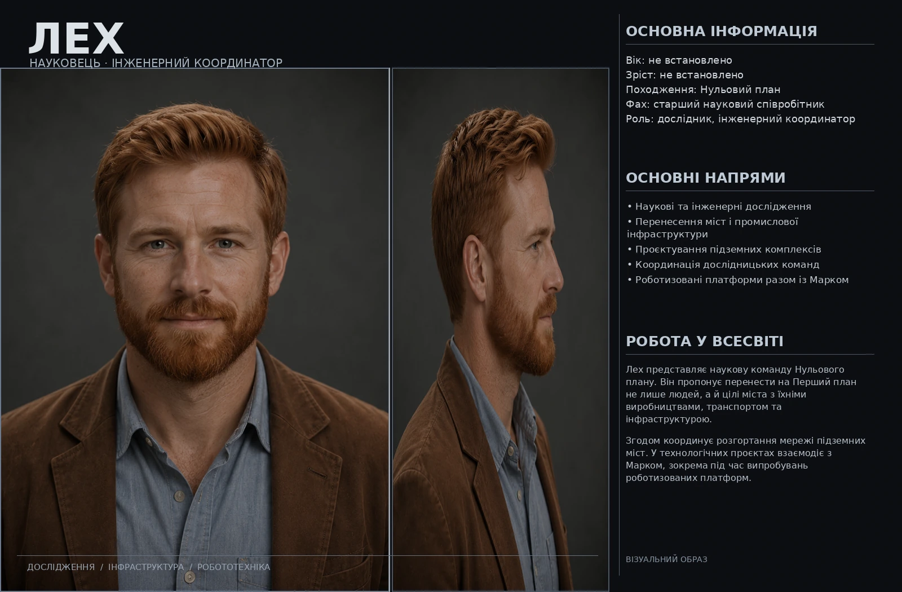

PROFILE
From research to engineering systems
Leh is a senior research associate from the Zero Plan. After moving to the First Plan, he becomes one of the key organisers of scientific and engineering work. He assesses complex technical tasks, connects separate workstreams and turns calculations into practical plans.
Origin: Zero Plan
Profession: scientist, senior research associate and engineering coordinator
Fields: research, engineering, portal technology and underground infrastructure
Projects: research centre, medical sector, underground cities and relocation of urban infrastructure
Collaborators: Mykolai, Dmytro, Bohdan, Marko, research and engineering teams
Visual reference: red hair, short red beard, light shirt and brown jacket
Age and height: not established in the manuscripts
RESEARCH CENTRE
Building research infrastructure
Leh represents a group of scientists from the Zero Plan and helps establish a research centre in facilities provided by Yevhen. Laboratories are equipped, instruments are moved and specialists from different fields are recruited. A separate medical sector is developed in parallel, with clinical laboratories, staff accommodation and medical capsules.
UNDERGROUND CITIES
Engineering on a civilisational scale
Leh proposes not only building new underground complexes, but also relocating ready-made Zero Plan cities with their buildings, factories, transport hubs and infrastructure. He organises engineering teams and oversees protective shells, support frames, utilities and life-support systems.
His work later expands to a network of underground cities across Ukraine. Leh coordinates schedules and parallel workstreams, reallocates equipment and specialists, checks complex readiness and prepares intercity transport links. He insists that speed must not come at the expense of safety: residents move in only after structural and engineering systems have been checked.
For the Donetsk project, he assesses old mine workings, identifies suitable sections and explains why a mine alone is not a ready underground city.
ROBOTICS
Working with Marko
During the R-10 presentation, Leh carefully evaluates the design and asks about stability, autonomy, movement modes, thought-link control and production at scale. He is interested in practical value to soldiers and engineering units, not an impressive demonstration. He works with Marko to review test results and the prospects for scaling robotic systems.
PERSONALITY AND WORKING STYLE
Demanding about facts and results
Leh is focused, practical and direct. Unannounced interruptions can irritate him. Once he sees a project's real potential, however, he quickly moves from criticism to concrete planning. He is frank about constraints, staffing needs and risks, and does not promise what his team cannot yet deliver.
REFERENCE DETAILS
Limits of confirmed canon
What the manuscripts confirm
- Leh is a senior research associate from the Zero Plan.
- He organises research and medical facilities and recruits specialists.
- He coordinates underground-city engineering and relocation of urban infrastructure.
- He evaluates the R-10 platform and works with Marko.
Visual reference
Red hair, a red beard, a light shirt and a brown jacket come from the supplied image, not a prose description in the manuscripts.
What remains unknown
His exact age, height, birthplace, family and full personal history are not established. The manuscripts also do not confirm that he is a kharakternyk.
Appearances in the books
Book one: research centre and medical sector. Book two: underground cities, engineering work and evaluation of the R-10. Book three: expansion of the underground-city network and coordination of new construction stages.